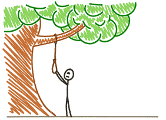

Le but du jeu est simple : deviner toute les lettres qui doivent
composer un mot, éventuellement avec un nombre limité de tentatives
(6 tentatives). A chaque fois que le joueur devine une
lettre, celle-ci sera montrée et placée à sa position dans la
composition du mot. Dans le cas contraire, le dessin d’un pendu se met
à apparaître…
Le but du jeu est aussi d'être parmi les dix meilleurs joueurs avec
moins de pénalités.
Comment gagner au pendu :
Le moyen le plus efficace pour réussir au jeu du Pendu est de
commencer par les lettres qui sont les plus fréquemment utilisées.
Pour cela, choisissez en premier les voyelles usuelles comme
“e”, “a”, “i”, “o”, “u” ainsi que les consonnes les plus utilisées
comme le “s” ou le “l”. Il faut ensuite suivre une logique pour
associer les lettres ainsi trouvées avec de nouvelles lettres
encore à deviner.

Modes du jeu :
Mode Joueur : Dans ce mode l'ordinateur choisira au hasard
un mot (parmi un ensemble de mots possibles), et devra faire deviner
ce mot au joueur en lui présentant tout d'abord uniquement le nombre
de lettres composant le mot, puis à chaque choix d'une lettre par le
joueur, l'emplacement de chaque lettre dans le mot.
Mode Ordinateur : Ce mode est à l'opposé du premier,
c'est-à-dire que le joueur est celui qui propose le mot,
et l'ordinateur qui essaye de le deviner.